1. 节点类型
每个节点有一个类型（Node Type）属性，它通常有数值常量和字符常量两种表示方式，IE 只支持数值常量方式。
节点类型有 12 种，下图中只展示了其中 7 种。
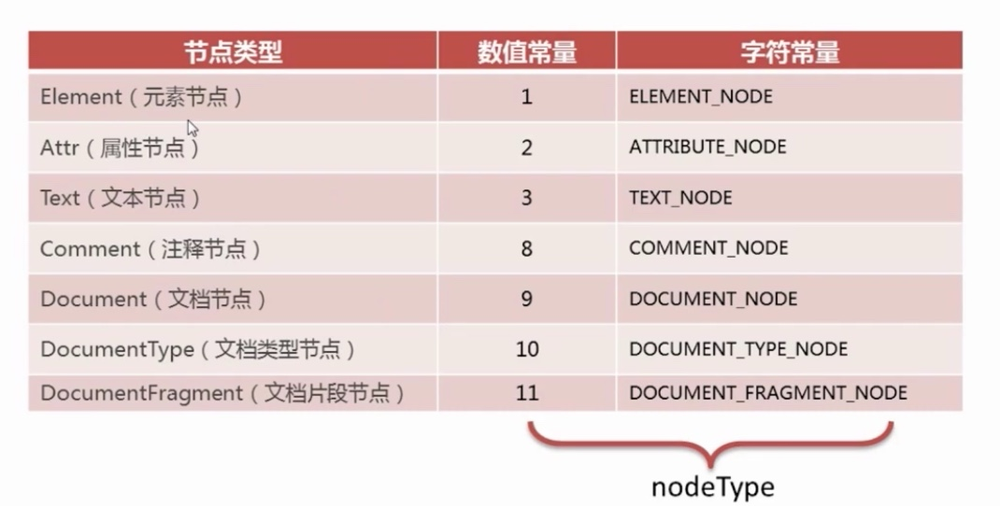
1.1 元素节点 Element
元素节点是组成文档树的重要组成部分，数值常量为 1，字符常量为 ELEMENT_NODE。
该节点通常拥有子元素、文本节点，或二者的结合，是唯一具有属性的节点类型。
1.2 属性节点 Attr
属性节点数值常量为 2，字符常量为 ATTRIBUTE_NODE。
由于属性是附属于元素的，因此不能视为元素节点的子节点。所以属性并不被认为是 DOM 的一部分。
例如下图中的 lang、charset、id等
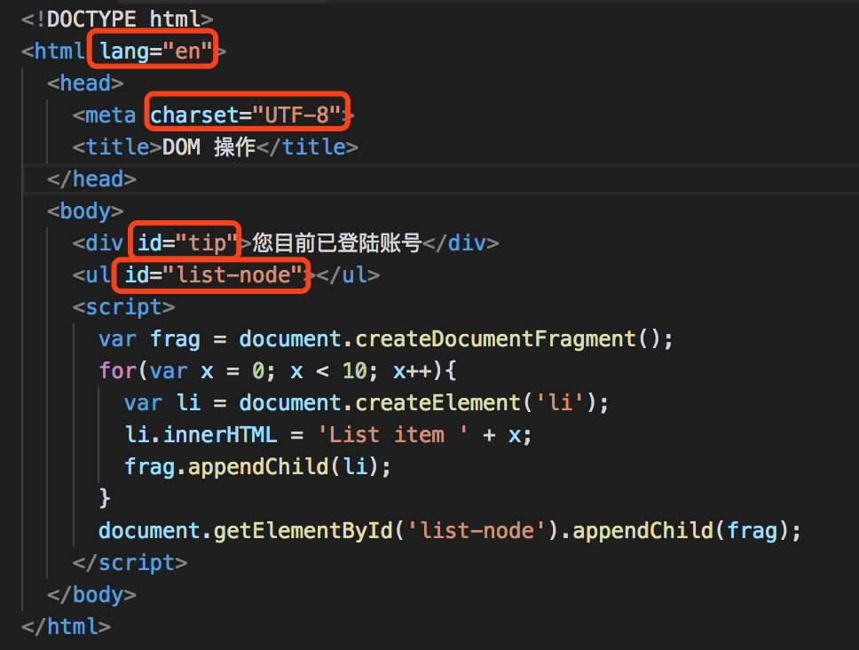
1.3 文本节点 Text
文本节点数值常量为 3，字符常量为 TEXT_NODE。
文本节点是包含文本内容的节点，它可以只包含空白或文本内容。
例如下图中的 DOM 操作、您目前已登陆账号：
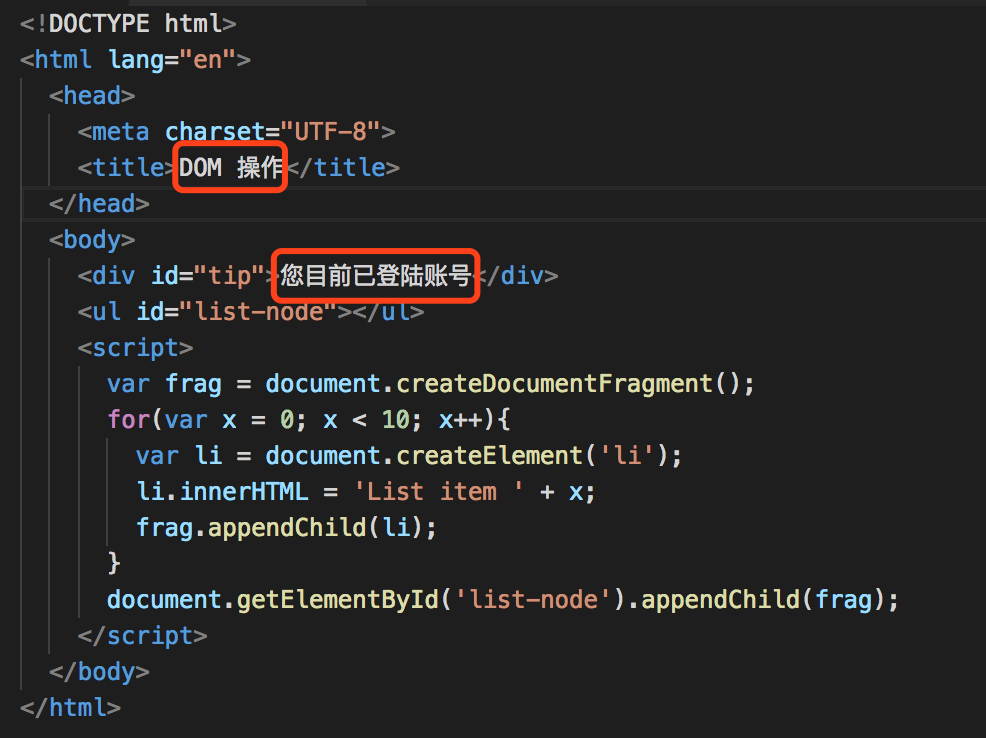
另外，标签后面的空白也被认为是文本节点。例如:
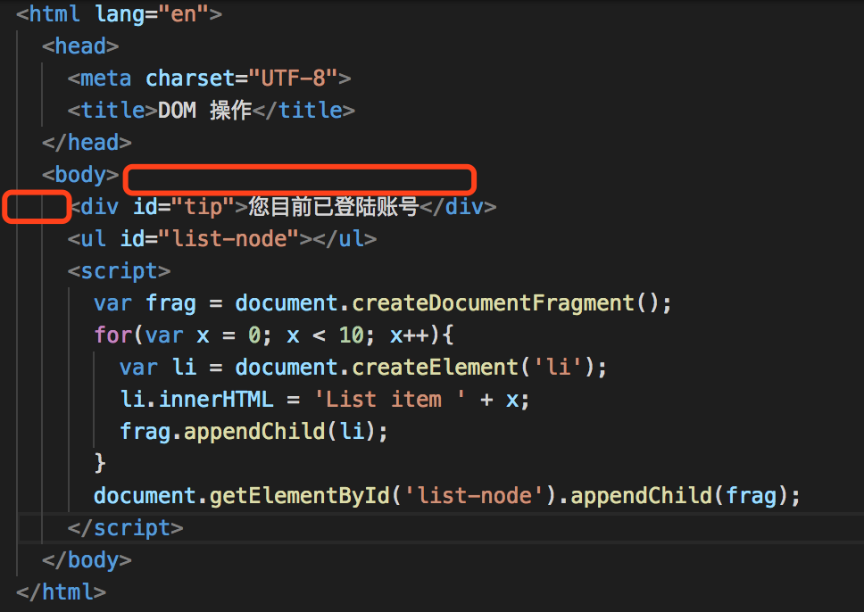
1.4 注释节点 Comment
注释节点数值常量为 8，字符常量为 COMMENT_NODE，是包含注释内容的节点。例如：
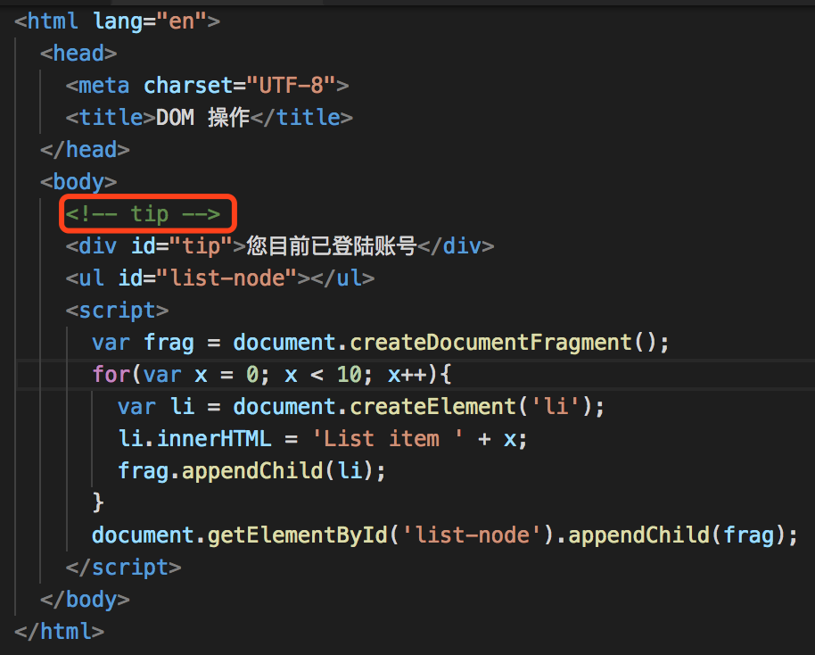
1.5 注释节点 Comment
注释节点数值常量为 9，字符常量为 DOCUMENT_NODE，是文档树的根节点，是其它所有节点的父节点。
注：它并不是 HTML 的根元素。由于处理指令、注释等可以出现在根元素之外，因此构造 DOM 树时根元素并不适合做文档节点。根元素是作为文档节点的子节点出现的。
如图，我们认为代码之上是文档节点。文档节点包含一个「文档类型节点」<!DOCTYPE html>和「元素节点」 <html>：
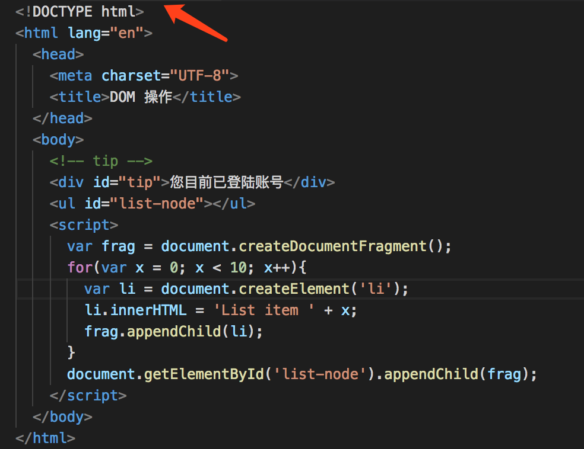
1.6 文档类型节点 DocumentType
文档类型节点数值常量为 10，字符常量为 DOCUMENT_TYPE_NODE。
每一个文档都有一个 DocType 属性，或者为 Null 或者为 DocType 对象。
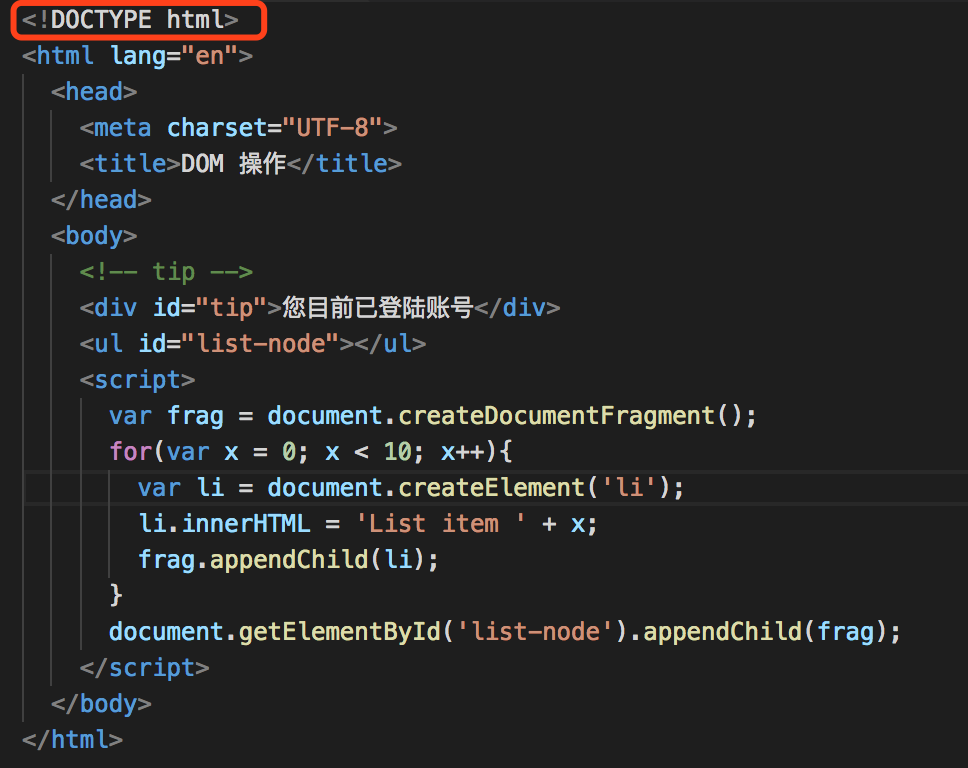
1.7 文档片段节点 DocumentFragment
文档类型节点数值常量为 11，字符常量为 DOCUMENT_TYPE_NODE。
文档片段代表文档中的一部分或一段，是轻量级的 document 对象，但不属于 DOM 树。但它有一种特殊的行为，比如当请求把 DocumentFragment 节点插入文档时，会将其子孙节点插入。同时有利于实现文档的复制、剪切等操作。
例如下图的 frag 保存了文档片段节点：
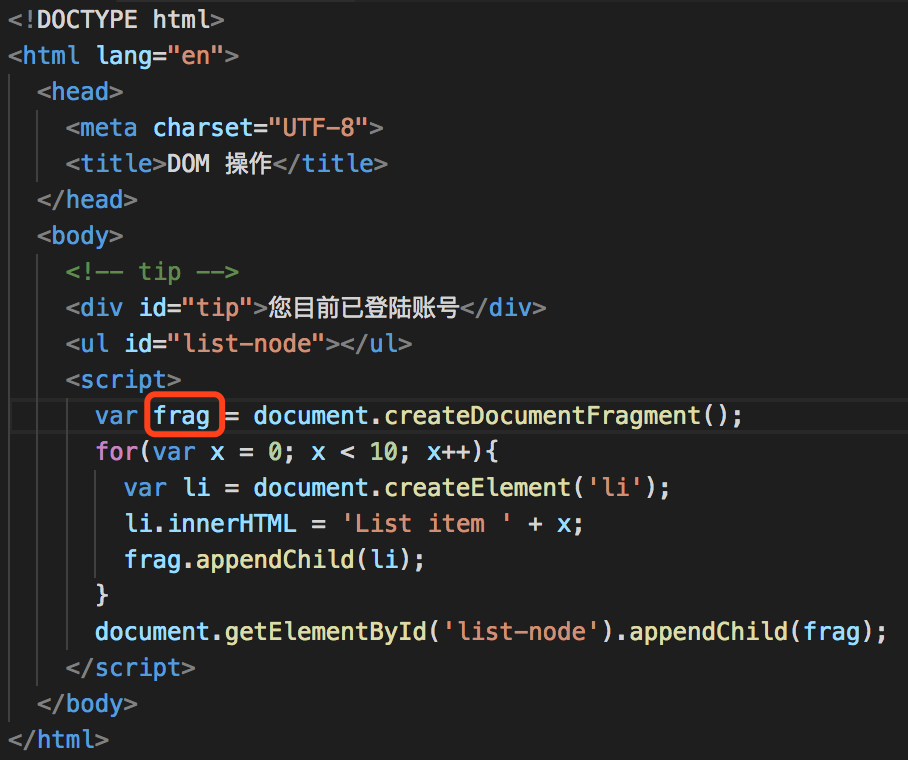
2. Document 对象属性及方法
2.1 属性
2.1.1 documentElement
返回文档最外层元素的引用，即根元素，它总是指 <html> 元素。
1 | document.documentElement; |
2.2 方法
2.2.1 getElementById()
返回带有指定 ID 的元素，如果不存在，则返回 null。
1 | var tip = document.getElementById('tip'); // |
2.2.2 getElementsByTagName()
返回包含带有指定标签名称的所有元素的节点数组，如果不存在，返回空的类数组。
1 | var eleList = document.getElementsByTagName('div'); |
注：该方法返回的是类数组，而非数组。可以用下面的方法将其转化为数组：
1 | var array = Array.prototype.slice.call(fakeArray); |
2.2.3 querySelector(cssSelector)
返回与给定 css 选择器匹配的第一个元素的引用（节点），如果不存在，则返回 null。
1 | var firstLi = document.querySelector('#list li'); |
2.2.4 querySelectorAll(cssSelector)
返回与给定 css 选择器匹配的一组元素的引用（节点列表）。
注：该方法返回的是类数组 [HTMLCollection]，而非数组。转换方式同上。
1 | var list = document.querySelectorAll('#list li'); |
注：querySelectorAll 返回的虽然是 NodeList ，但是实际上是元素集合，并且是静态的（其他接口返回的 HTMLCollection 和 NodeList 都是 live 的）
2.2.5 createElement(elementName)
创建一个新的元素节点。
创建后通常配合 appendChild()、insertChild() 方法一起使用。例如：
1 | <ul id="list"> |
1 | var newEle = document.createElement("li"); |
上面代码实现了创建一个元素后加入到列表中，结果如下：
1 | <ul id="list"> |
2.2.6 createTextNode(text)
创建新的文本节点。createTextNode 通常配合 createElement 一起使用，实现为某个元素节点添加文本节点。
1 | let newNode = document.createElement('li'); |
上述代码会创建一个 <li>Juice</li> 的节点。
注：innerHTML 和 createTextNode 的区别
下面两种写法的结果是一样的：
1 | ele.innerHTML = "Juice" |
二者的区别在于 innerHTML 可以添加 HTML 标签，会被当做 HTML 语法进行解析。对比以下两种情况：
1 | document.createTextNode('<br>Juice</br>'); |
得到的结果是：
createTextNode 方法：
innerHTML 方法：
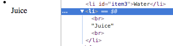
2.2.7 createAttribute(name)
创建新的属性节点。
通常需要配合 value 属性、setAttributeNode 方法和 setAttribute(name, value) 方法一起使用，实现为某个元素节点添加属性节点。
1 | <li id="item1">Coffee</li> |
1 | let att = document.createAttribute("class"); |
结果为：
1 | <li id="item1" class="red-color">Coffee</li> |
一些需要注意的点
HTMLCollection 与 NodeList
HTMLCollection 是元素集合而 NodeList 是节点集合（既可以包含元素，也可以包含文本节点）。
3. Element 对象属性及方法
3.1 属性
3.1.1 tagName
获取元素的标签名称，返回值为 String 类型。
1 | document.getElementById("tip").tagName; |
注：在 HTML 中，tagName 属性的返回值始终是大写的。
3.2 方法
3.2.1 getAttribute(attributeName)
获取属性的值，类型为 String。如果该属性不存在，则返回 null。
1 | document.getElementById("tip").getAttribute('id'); |
另外，有 getAttributeNode(attributename) 方法，用于获取属性节点。
3.2.2 setAttribute(attributeName, attributeValue)
用指定的值设置属性
1 | document.getElementById("tip").setAttribute('align', 'center'); |
设置后 DOM 中增加了 align 属性：
1 | <div id="tip" align="center">您目前已登陆账号</div> |
另外，还有一个类似的方法 setAttributeNode()，功能与 setAttribute() 相同，但传入的参数不相同。
1 | let att = document.createAttribute("align"); |
3.2.3 removeAttribute(attributeName)
从元素中删除指定的属性及其值
1 | document.getElementById("tip").removeAttribute('align', 'center'); |
执行后 DOM 中删除了 align 属性：
1 | <div id="tip">您目前已登陆账号</div> |
4. Node 对象属性及方法
4.1 属性
4.1.1 firstChild
获取指定节点的首个子节点。
1 | <ul id="list"> |
1 | document.getElementById('list').firstChild; |
注：在现代浏览器下，比如 Chrome、 FF 和 IE11 等会把 <ul> 与 <li> 两个标签之间的空白节点也解析出来，所以获取到的是 #text，即空白字符会被作为文本节点，如下：
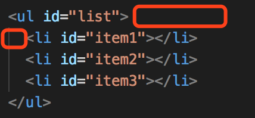
所以如果你的结构是上面那样，用 document.getElementById("list").firstChild; 取到的只能是一个空的文本节点，而不是期望的 <li> 元素节点。
如果你想实现上面的效果，正确的写法应该是：
1 | <ul id="list"><li id="item1"></li><li id="item2"></li><li id="item3"></li></ul> |
或者可以用 children[0] 方法代替：
1 | document.getElementById('list').children[0]; |
4.1.2 lastChild
获取指定节点的最后一个子节点。
1 | <ul id="list"> |
1 | document.getElementById('list').lastChild; |
lastChild 同样存在返回空的文本节点的问题，问题原因与解决方法同 firstChild。
4.1.3 previousSibling
4.1.4 nextSibling
4.1.5 ownerDocument
4.1.6 parentNode
节点（元素）的父节点
4.1.7 childNodes
获得元素的子节点集合，返回类型为一个数组。
由 childNodes 属性返回的数组中包含着所有类型的节点，所有的文本节点也包含在其中。
注：属性不是节点，因此不会出现在数组里。
1 | <ul id="list"> |
1 | let childnodes = document.getElementById('list').childNodes; |
输出结果：
1 | 7 |
与 childNodes 类似的有一个 children 属性，它返回指定元素的子元素集合。但它只返回 HTML 节点，甚至不返回文本节点。虽然不是标准的 DOM 属性，但它和 innerHTML 方法一样，得到了几乎所有浏览器的支持。
因此如果想获取指定元素的第一个元素节点，可以使用 children[0] 来替代上面的 firstChild。
注：childNodes 是标准属性，而 children 不是标准属性，
4.1.8 nodeName
获得节点名称。
- 如果节点是元素节点，返回节点的名字。此时，相当于 tagName 属性
- 如果是属性节点，nodeName 将返回这个属性的名字
- 如果是文本节点，nodeName 将返回一个 #text 的字符串
下面是个栗子：
1 | <li id="item1" align="center">aaa</li> |
1 | // 元素节点 |
注：nodeName 返回的元素节点名称为大写字母。
4.1.9 nodeType
获取节点类型的数值常量，各节点数值常量参见第一节内容。
下面是个栗子：
1 | <li id="item1" align="center">aaa</li> |
1 | document.getElementById('item1').nodeType; // 1 |
4.1.10 nodeValue
获取节点的值
- document 文档：返回 null
- 元素节点：返回 null
- 文本节点：返回其节点的内容
- 注释节点：返回其节点的内容
1 | document.nodeValue; // null |
4.2 方法
4.2.1 appendChild(newNode)
将一个新 node 对象添加到自节点列表的末尾，返回追加的节点。
假如当前页面有以下 DOM 结构：
1 | <ul id="list"> |
用法一：添加文本/元素节点
1 | var text = document.createTextNode("我是文本"); |
执行上述代码后：
1 | <ul id="list"> |
用法二：转移某个列表项到另外一个列表项
1 | <ul id="list1"> |
1 | var node = document.getElementById("list1").lastChild; |
1 | <ul id="list1"> |
注：
1、如果被插入的节点已经存在，则从当前父节点中删除，添加到新的父节点。
2、空白字符会被作为文本节点，如下：
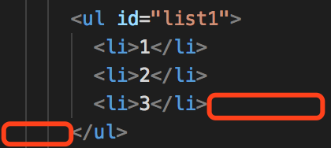
所以如果你的结构是上面那样，用 document.getElementById("list1").lastChild; 取到的只能是一个空的文本节点，而不是期望的 <li> 元素节点。
如果你想实现上面的效果，正确的写法应该是：
1 | <ul id="list1"><li>1</li><li>2</li><li>3</li></ul> |
当然，这种写法很变态，所以如果你想取元素，可以用 lastElementChild 代替 lastChild。
4.2.2 removeChild(childNode)
删除子节点
1 | <ul id="list"> |
1 | list = document.getElementById("list"); |
执行上面的代码后，DOM 结构发生了改变，我们如愿删除了第一个子元素：
1 | <ul id="list"> |
事实上，childNodes[0] 和 firstChild 面临着相同的问题，都会取到文本节点。我们可以用 list.children[0] 来代替。需要注意的是，firstChild 和 childNodes 才是标准的，而 children 不是标准的。
4.2.3 replaceChild()
1 | <ul id="list"> |
1 | let newNode = document.createTextNode('Juice'); |
1 | <ul id="list"> |
上面是替换文本节点，另外还可以替换元素节点。
注：如果替换的节点是已存在的节点，则原节点被删除，替换新的节点。如下：
1 | <ul id="list1"> |
1 | let newNode = document.getElementById("list1").childNodes[0]; |
1 | <ul id="list1"> |
4.2.4 cloneNode(deep)
创建节点的拷贝，并返回该副本。该方法会克隆所有属性以及它们的值。
参数： deep
- true，克隆节点及其属性，以及后代
- false，默认值，只克隆节点及其后代，不复制属性。
1 | <ul id="list1"> |
1 | let node = document.getElementById("list1").childNodes[0]; |
结果：
1 | <ul id="list1"> |
如果将 true 改为 false，那么将不会把它的文本子节点克隆过来：
1 | <ul id="list1"> |
4.2.5 hasChildNodes()
检查元素是否有子节点。如果指定节点拥有子节点返回 true，否则返回 false。
1 | <ul id="list1"> |
1 | document.getElementById('list1').hasChildNodes(); // true |
4.2.6 insertBefore(newNode, referenceNode)
在指定的子节点前面插入新的子节点。
- newNode：被插入的节点
- referenceNode：需插入哪个节点之前
1 | <ul id="list"> |
1 | // 创建新节点 |
添加子节点后：
1 | <ul id="list"> |
如果插入的新节点是原来已存在的节点，那么原节点会被删除，增加到新的位置上。
1 | <ul id="list1"> |
1 | let newNode = document.getElementById('list1').lastChild; |
结果如下：
1 | <ul id="list1"> |